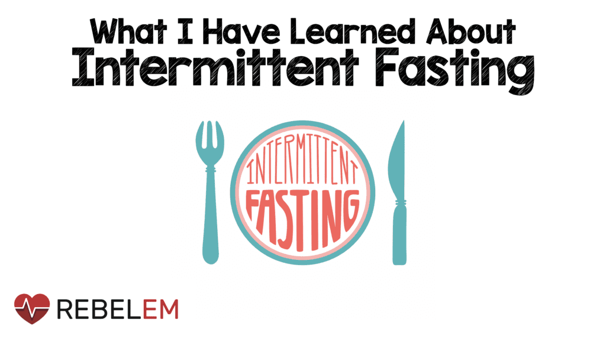

الصيام المتقطع (Intermittent Fasting) هو نمط غذائي يتضمن فترات صيام منتظمة متبعة بفترات طعام. في هذا النظام، يتم تقييد تناول الطعام لفترة زمنية محددة، ومن ثم يتم السماح بتناول الطعام خلال فترة زمنية أخرى.تعتقد بعض الدراسات أن الصيام المتقطع يمكن أن يساعد في فقدان الوزن، تعزيز صحة القلب، تحسين الحساسية للأنسولين، وتعزيز عملية التنظيف الذاتي للجسم (الأوتوفاجي)، ولكن مزيد من الأبحاث ما زالت قيد الدراسة لتحديد فوائده وتأثيراته على المدى الطويل.
1. نمط 16/8: يشمل صيام لمدة 16 ساعة يوميًا، متبوعًا بنافذة زمنية لتناول الطعام لمدة 8 ساعات. على سبيل المثال، يمكنك تأخير وجبة الإفطار وتناول الطعام فقط في الفترة بين الساعة 12 ظهرًا والساعة 8 مساءً. 2. نمط 5:2: يتضمن تناول كمية عادية من الطعام لمدة 5 أيام في الأسبوع، وصيام (تقليل السعرات الحرارية إلى 500-600 سعرة) لمدة 2 يوم في الأسبوع غير متتاليين. 3. نمط Eat-Stop-Eat: يتضمن صيام كامل لمدة 24 ساعة مرة أو مرتين في الأسبوع. على سبيل المثال، يمكن أن يكون لديك وجبة العشاء في اليوم الأول، ثم تصوم حتى وجبة العشاء في اليوم التالي. 4. نمط صيام بديل: يتضمن تناول السعرات الحرارية بشكل محدود (حوالي 25٪ - 30٪ من احتياجاتك اليومية) لمدة 2-3 أيام في الأسبوع، وتناول الطعام بشكل طبيعي في الأيام الأخرى.
يعتبر الصيام المتقطع أداة فعالة لفقدان الوزن، وتحسين صحة القلب، وتعزيز صحة الدماغ، وزيادة تحمل الجسم للتوتر والتأقلم الخلوي. ومع ذلك، يجب أن يتم تبني هذا الأسلوب الغذائي بحذر، وينبغي استشارة الطبيب أو أخصائي التغذية قبل البدء فيه، خاصة إذا كان لديك حالة صحية معينة أو تتناول أدوية محددة.